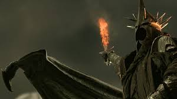
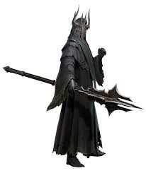
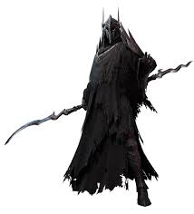

Nazgûl – The Nine Ringwraiths
Once kings and warriors of Men, the Nazgûl were deceived by Sauron during the Second Age with Rings of Power. Now bound to the One Ring, they are his most feared servants. Cloaked in shadow and fear, their names and deeds live on in darkness.
Strongholds & Haunts
- Barad-dûr – Sauron's fortress in Mordor and primary command post for the Nazgûl.
- Minas Morgul (formerly Minas Ithil) – Taken by the Nazgûl and turned into a corrupted citadel, used as a base for attacks on Gondor.
- Dol Guldur – Initially used by the Witch-king (and Sauron under the guise of the Necromancer) during his return to power.
- Mount Doom – Though not a residence, the Nazgûl protected and patrolled this site as it was crucial to their master’s power.
-
Fall of Minas Ithil
The Nazgûl assaulted the city and took it from Gondor, corrupting it into Minas Morgul. From here, they launched further campaigns against the West. -
Hunt for the Ring (3018 TA)
The Nine rode in secrecy and terror across Middle-earth in search of the One Ring. They attacked Frodo at Weathertop, causing him to be gravely wounded by a Morgul blade. -
Battle of the Pelennor Fields (3019 TA)
The Witch-king led Sauron’s armies against Minas Tirith. He slew King Théoden of Rohan before being destroyed by Éowyn and Merry in fulfillment of prophecy. -
Siege of Minas Tirith
The Nazgûl led the aerial assault atop fell beasts, sowing fear and chaos among the defenders of Gondor. -
Battle at the Black Gate (Morannon)
Surviving Ringwraiths were present during the final confrontation as a distraction while Frodo neared Mount Doom. -
Destruction at Mount Doom
When the One Ring was destroyed in the fires of Mount Doom, the Nazgûl perished in flame and wind, their spirits unmade. -
The Witch-king of Angmar

The Witch-king of Angmar is the most powerful of the Nazgul, or Ringwraiths, nine lords of men deceived by Sauron and corrupted by his "gifts". He is the commander of Sauron's armies and a being of incredible power. A prophecy says he shall not fall by the hand of man. The Lord of the Ringwraiths was a powerful Numenorean King alive during the Second Age, tricked by Sauron with the gift of a Ring of Power. Gifted with a very long lifespan thanks to the power of his ring, he eventually turned into a wraith more than 4000 tears before the War of the Ring. He was deceived during the Second Age. He founded the Kingdom of Angmar on order of Sauron in the Third Age, to attack the Men of Arnor from the North. Although Angmar's armies eventually suffered defeat from an alliance of Gondor and Lindon armies, the Mannish kingdom of Arnor fell after the fall of Fornost, the capital city. He killed the last King of Gondor which started the rule of Stewards. Led an army from Mordor to capture and eventually destroy Osgiliath, the former capital of Gondor, Rebuilt Mordor's armies on Sauron's order, with the help of the other Ringwraiths, and captured the neighbouring Minas Ithil, rebaptising it Minias Morgul. Planned and led the invasion of Gondor and lead the battle of the Pelennor Fields, besieging Minias Tirith and confronted Gandalf the White at the doors of the White city. Was ultimately defeated by Eowyn by being stuck in the heel by Merry's Barrow Blade which weakened the wraith's grasp on it physical form and a direct blow from Eowyn's sword which banished him to the void. -
Khamûl
Khamul was an Easterling King who fell prey to Sauron's deception by accepting one of the nine Rings of Power given to Men of Middle-Earth, eventually succumbing to it and transforming into a Ringwraith. Among the Nazgul, he is second in power only to the Witch-king of Angmar. There is not much knowledge about who Khamul orginally was, except for his Easterling orgins. As with the other Ringwraiths he was deceived by Sauron 4000 years ago when his Easterling kingdom was at its peak, lived an extradordinary long life thanks to his Ring of Power, but couldnt escape his fate to pass to the shadow to serve the Dark Lord. Was deceived during the Second Age and suffered the fate of the rest of the Nazgul. -
Skalhelm
Skalhelm was a great leader of the Dunedains or Arnor nefore she met Sauron, the "Lord of Gifts", and accepted one of the rings of power delivered to Men. She is now serving the One Ring, and her ranger abilities are invaluable to the Nine. Skalhelm made a point to be on the front lines with her men when securing Arnor's borders. As such, she knew a lot about the lands and was a great hunter. She now has been serving the One for more than 4000 years. She was deceived by Sauron and turned into a Ringwraith during the Second Age. She fought in the war of the Last Alliance and disppeared after Sauron defeat and defended the Black Gate during the last battle of the War of the Ring until the Ring was destoyed and her soul bound with it. -
The Undying

The Undying's real name is unknown, but it is said he was a powerful King that lived during the Second Age, tricked by Sauron with the gift of a Ring of Power. Gifted with a very long lifespan thanks to the power of his ring, he eventually turned into wraith more than 400 before the War of the Ring. Deceived by Sauron's gift, turned into a Ringwraith during the second age and had the same fate as all of the Nazgul. -
The Shadow
The Shadow is a one of the Nine Nazgul tricked into servitude by Sauron. As a Ringwraith bound to do its master's bidding, the Shadow is an expert stalker that never loses sight of its mark. The Shadow was one of the most powerful Kings of Men during the Second Age, but alas was tricked by Sauron with the gift of a Ring of Power that wouldf eventually corrupt him. He passed to the shadow more than 400 years before the War of the Ring. Deceived during the Second Age and suffered the fate of the rest of the Nazgul. -
Cestaro
A Numenorean King of old, Cestaro is now nound to the One Ring under Sauron's dominion. Among the Nazgul, his mastery of the dark arts is only matched by the Witch-king himself. Cestaro was proud and powerful when he got seduced by the gift of a Ring of power during the Second Age. During the four millennia of his servitude in the shadows, he had time to hone his craft and prepare for the return of the Dark Lord. Deceived during the Second Age and suffered the fate of the rest of the Nazgul. -
Lathar
Lathar was a powerful Numenorean King when Sauron under his fair form tricked Men with the Rings of power. Now he serves the One as a Ringwraith. Lathar was one of the most important Kings of Men during the Second Age, and as such got offered one of the Rings of power by the Dark Lord. For 4000 years he had no choice but to do his master's bidding, as Mordor's assassin. Was deceived during the Second Age suffered the fate of the rest of the Nazgul. -
Qurwan

Qurwan originally was a renowned Haradim warchief, whose feats were whispered about in every tavern of Middle-Earth. In a search for more power, he was seduced by the Rings of Power and is now under the dominion of the Dark Lord. The earliest records of Qurwan date back to the Second Age, when he was the scourge of Gondor as the mind behind the Haradric assaults on the Southern Mannish Kingdom. He now has been serving the One Ring for thousands of years. He was deceived during the Second Age and suffered the fate of the rest of the Nazgul.